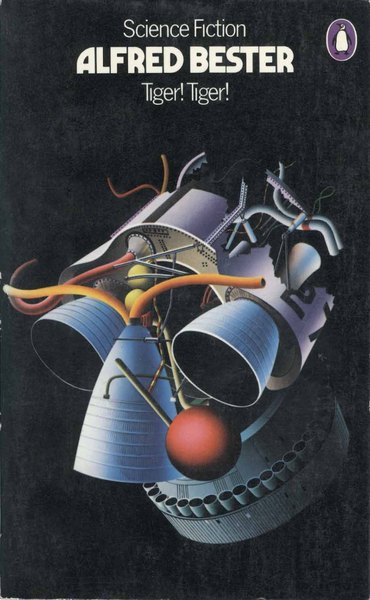

CRVI000452Derek Birdsall - Reconstructing Social Psychology
Cover for Nigel Armistead · Penguin Education · 1972
Cover for Nigel Armistead · Penguin Education · 1972

CRVI000241Phil Baines - Why I Am So Wise
Cover for Friedrich Nietzsche · Penguin Great Ideas · 2004
Cover for Friedrich Nietzsche · Penguin Great Ideas · 2004

CRVI000140Jutaro Itoh - 企業空間のサイン — Corporate Signs (Designing Signs Vol. 2)
Jutaro Itoh and Atsuko Taguchi · Rikuyo-sha
Jutaro Itoh and Atsuko Taguchi · Rikuyo-sha

CRVI000576Alvin Lustig - Illuminations
Arthur Rimbaud · New Directions, New Classics NC14 · 1945
Arthur Rimbaud · New Directions, New Classics NC14 · 1945

CRVI000575Alvin Lustig - Selected Poems
Ezra Pound · New Directions, New Classics NC22 · 1949
Ezra Pound · New Directions, New Classics NC22 · 1949

CRVI000440Unknown - After Hitler
Cover for Jürgen Neven-du Mont · Pelican
Cover for Jürgen Neven-du Mont · Pelican

CRVI000444David Pelham - The Drought
Cover for J. G. Ballard · Penguin Science Fiction · 1974
Cover for J. G. Ballard · Penguin Science Fiction · 1974

CRVI000445John Griffith - The Black Cloud
Cover for Fred Hoyle · Penguin
Cover for Fred Hoyle · Penguin

CRVI000187E. McKnight Kauffer - Point Counter Point
Dust jacket for Aldous Huxley's Point Counter Point · The Modern Library, New York · 1942
Dust jacket for Aldous Huxley's Point Counter Point · The Modern Library, New York · 1942

CRVI000446Unknown - The New Men
Cover for C. P. Snow · Penguin
Cover for C. P. Snow · Penguin

CRVI000245Peter Bentley - Urgent Copy
Cover for Anthony Burgess · Penguin
Cover for Anthony Burgess · Penguin

CRVI000443David Pelham - The Drowned World
Cover for J. G. Ballard · Penguin Science Fiction · 1974
Cover for J. G. Ballard · Penguin Science Fiction · 1974

CRVI000442David Pelham - The Demolished Man
Cover for Alfred Bester · Penguin Science Fiction
Cover for Alfred Bester · Penguin Science Fiction

CRVI000250Peter Bentley - The Wanting Seed
Cover for Anthony Burgess · Penguin
Cover for Anthony Burgess · Penguin

CRVI000457Janet Halverson - JFK and LBJ
Cover for Tom Wicker · Pelican
Cover for Tom Wicker · Pelican

CRVI000185Ernst Reichl - Ulysses
Dust jacket for James Joyce's Ulysses · Random House, New York · 1934
Dust jacket for James Joyce's Ulysses · Random House, New York · 1934

CRVI000577Alvin Lustig - A Handful of Dust
Evelyn Waugh · New Directions, New Classics NC8 · 1945
Evelyn Waugh · New Directions, New Classics NC8 · 1945

CRVI000438John McConnell - The Concept of Mind
Cover for Gilbert Ryle · Penguin University Books
Cover for Gilbert Ryle · Penguin University Books

CRVI000367Peter Bentley - The Malayan Trilogy
Cover for Anthony Burgess · Penguin
Cover for Anthony Burgess · Penguin

CRVI000456Peter Bentley - Helena
Cover for Evelyn Waugh · Penguin
Cover for Evelyn Waugh · Penguin

CRVI000437Unknown - Marx in His Own Words
Cover for Ernst Fischer · Pelican
Cover for Ernst Fischer · Pelican

CRVI000454Peter Bentley - Brideshead Revisited
Cover for Evelyn Waugh · Penguin
Cover for Evelyn Waugh · Penguin

CRVI000448Derek Birdsall - Socialization
Cover for Kurt Danziger · Penguin Education · 1972
Cover for Kurt Danziger · Penguin Education · 1972

CRVI000453Derek Birdsall - Culture Against Man
Cover for Jules Henry · Penguin Education · 1972
Cover for Jules Henry · Penguin Education · 1972

CRVI000578Alvin Lustig - The Great Gatsby
F. Scott Fitzgerald · New Directions, New Classics NC9 · 1945
F. Scott Fitzgerald · New Directions, New Classics NC9 · 1945

CRVI000574Alvin Lustig - A Room with a View
E M Forster · New Directions, New Classics NC5 · 1943
E M Forster · New Directions, New Classics NC5 · 1943

CRVI000458Alan Aldridge - Operation Pax
Cover for Michael Innes · Penguin Crime
Cover for Michael Innes · Penguin Crime

CRVI000460Alan Aldridge - Suspicious Circumstances
Cover for Patrick Quentin · Penguin Crime
Cover for Patrick Quentin · Penguin Crime

CRVI000459Alan Aldridge - Hamlet, Revenge!
Cover for Michael Innes · Penguin Crime
Cover for Michael Innes · Penguin Crime

CRVI000416Alan Aldridge - Docken Dead
Cover for John Trench · Penguin Crime
Cover for John Trench · Penguin Crime

CRVI000375Alan Aldridge - Hare Sitting Up
Cover for Michael Innes · Penguin Crime
Cover for Michael Innes · Penguin Crime

CRVI000573Alvin Lustig - Three Lives
Gertrude Stein · New Directions, New Classics NC3 · 1945
Gertrude Stein · New Directions, New Classics NC3 · 1945

CRVI000572Alvin Lustig - Monday Night
Kay Boyle · New Directions, New Classics NC20 · 1947
Kay Boyle · New Directions, New Classics NC20 · 1947

CRVI000441David Pelham - Tiger! Tiger!
Cover for Alfred Bester · Penguin Science Fiction
Cover for Alfred Bester · Penguin Science Fiction

CRVI000243Jim Stoddart - Horse Under Water
Cover for Len Deighton · Penguin · 2021
Cover for Len Deighton · Penguin · 2021

CRVI000579Alvin Lustig - A Streetcar Named Desire
Tennessee Williams · New Directions · 1947
Tennessee Williams · New Directions · 1947

CRVI000455Jim Stoddart - Billion Dollar Brain
Cover for Len Deighton · Penguin · 2021
Cover for Len Deighton · Penguin · 2021

CRVI000186E. McKnight Kauffer - Ulysses
Dust jacket for James Joyce's Ulysses · Random House, New York · 1946
Dust jacket for James Joyce's Ulysses · Random House, New York · 1946

CRVI000188E. McKnight Kauffer - Don Quixote
Dust jacket for Miguel de Cervantes' Don Quixote · The Modern Library, New York · 1940
Dust jacket for Miguel de Cervantes' Don Quixote · The Modern Library, New York · 1940

CRVI000450Derek Birdsall - Social Science and Public Policy
Cover for Martin Rein · Penguin Education · 1972
Cover for Martin Rein · Penguin Education · 1972

CRVI000439Unknown - Sanity, Madness and the Family
Cover for R. D. Laing and A. Esterson · Pelican
Cover for R. D. Laing and A. Esterson · Pelican

CRVI000447Derek Birdsall - Ideology
Cover for L. B. Brown · Penguin Education · 1972
Cover for L. B. Brown · Penguin Education · 1972

CRVI000449Derek Birdsall - Peasants and Peasant Societies
Cover for Teodor Shanin · Penguin Education · 1972
Cover for Teodor Shanin · Penguin Education · 1972

CRVI000451Derek Birdsall - Creativity
Cover for P. E. Vernon · Penguin Education · 1972
Cover for P. E. Vernon · Penguin Education · 1972